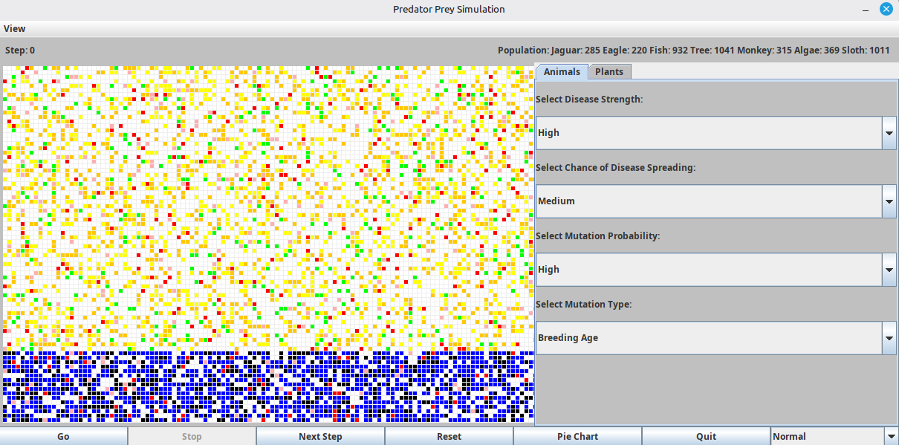

Java Object-Oriented Simulation & Interactive Visualisation

This Java simulation models a dynamic ecosystem containing multiple animal and plant species interacting within a shared environment.
The simulation includes monkeys, sloths, jaguars, eagles, fish, trees and algae. Each species is represented as an actor within the ecosystem and participates in the simulation according to its own behaviour.
The environment also includes biome restrictions, allowing different organisms to occupy appropriate areas of the field. The ecosystem changes continuously as actors perform actions, reproduce, move and die.
The simulation contains monkeys, sloths, jaguars, eagles, fish, trees and algae, each represented as independent actors within the field.
Organisms are created within valid spatial boundaries, allowing different species to occupy suitable regions of the simulated environment.
Users can start, stop, reset or manually advance the simulation one step at a time through the Java Swing interface.
Multiple simulation speeds allow the ecosystem to be observed slowly for detailed analysis or rapidly across many simulation steps.
Animal and plant populations can be affected by configurable disease strength, spread rate, mutation probability and mutation behaviour.
Population statistics are updated throughout the simulation and can also be displayed using a live pie chart.
The simulation is structured around a shared collection of actors. Each simulation step iterates through the active actors, allowing every organism to perform its own behaviour.
Different species share a common actor abstraction. The simulation can therefore call the same action method for every organism without requiring species-specific logic in the central simulation loop.
Each step advances simulation time, processes the behaviour of active actors, removes dead organisms and adds newly created actors.
The simulation maintains collections for actors, animals and plants, allowing functionality such as disease application to target the correct population.
Organisms occupy positions within a rectangular field, allowing spatial behaviour and biome restrictions to be represented directly within the simulation.
The field is populated using species-specific creation probabilities while ensuring organisms are placed within valid spatial boundaries.
Each simulation step increments the global simulation time before actors perform their actions.
Every active actor performs its behaviour through the shared actor interface, allowing different species to operate polymorphically.
Dead actors are removed while newly created organisms are added to the main simulation population.
The Java Swing interface allows users to control both the execution speed and biological conditions of the ecosystem.
Starts or pauses the automatic execution of simulation steps.
Advances the ecosystem by a single step for closer inspection of simulation behaviour.
Reinitialises the field and generates a new population configuration.
Alters the delay used by the Swing timer, allowing the simulation to run at different speeds.
The simulation supports separate disease configuration for animal and plant populations.
Users can modify disease strength, spread rate and mutation probability through the interface. Mutation behaviour can also affect biological characteristics such as breeding probability, breeding age and maximum litter size.
Disease objects can be introduced specifically into the animal population.
Disease can also be applied independently to plant populations.
Users can configure how likely mutation effects are to occur within the affected population.
Mutation settings can alter characteristics including breeding probability, breeding age and maximum litter size.
The simulation interface redraws the ecosystem as the population changes.
Each organism type is represented using a different colour. Population statistics are recalculated every step and used to update both the main interface and the live pie chart.
The ecosystem contains several organisms with different behaviours. A shared actor abstraction allows the main simulation loop to process them consistently without tightly coupling the simulator to individual species.
Organisms can die while new actors can be introduced during a simulation step. Separate collections safely track new actors before they are merged into the main population.
Species must remain compatible with the environment they inhabit. Spatial bounds are checked while the population is created to prevent organisms appearing in invalid regions of the field.
A Swing timer triggers simulation steps at regular intervals while still allowing the interface to respond to controls such as Stop, Reset and simulation speed changes.
Uses inheritance, shared abstractions and polymorphic behaviour to model different ecosystem actors.
Java Swing events and timers control simulation execution and user interaction.
The population changes continuously as actors perform actions, die and create new actors.
Live population statistics and graphical updates provide immediate visual feedback as the ecosystem changes.
A demonstration of the Predator–Prey Ecosystem Simulation, showing the interactive controls, ecosystem behaviour and live simulation visualisation.
The Predator–Prey Ecosystem Simulation source code is available on GitHub.
View Source Code